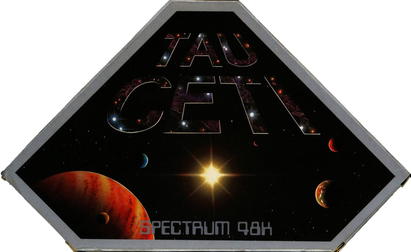
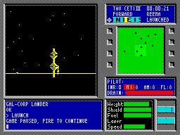
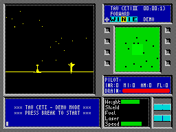
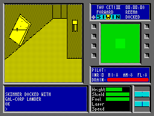

Tau Ceti


{kind=link}

| Publisher: | CRL |
| Price: | £9.95 |
| Year: | 1985 |
| Source: | CRASH, Issue 23 |

Location: Tau Ceti System
Stellar Data: G Type
Distance from Earth: 19.4 light years
Galactic co-ordinates: 13 degrees Galactic South West
Colonisation Data: First wave left Earth in 2050 arriving 2090. Tau Ceti III colony lost within ninety years due to plague. This was to become the first major disaster in man’s involvement with space. Soon after, a second expedition met with an even worse fate...
Excerpt from Encyclopaedia Galactica
Man’s first colony on Tau Ceti III was wiped out by a previously undiscovered plague. When a cure was found, a second expedition left for the world. Unfortunately, the planet’s automatic self defence system had malfunctioned meantime, and the ships of the second expedition and all the colonists were wiped out. After much deliberation back on earth it was decided that a small one-man vessel might manage to penetrate the defence screens and shut down the central nuclear reactor which powers the robot guards. A tricky mission — but it just might be possible. ‘Like a fool, you volunteered,’ as it says on the box cover.

Tau Ceti is a complex game to play. You control a Skimmer, and begin from a docking bay in a city on Tau Ceti III. Basically, you have to wander around this and other cities finding and collecting cooling rods which need to be installed in the planet’s main fusion reactor in order to shut it down. Once the reactor has been switched off, the guardian robots will cease to prowl the planet’s surface and colonists will be able to move back in safety.
Your view into the game is from the cockpit of the skimmer. The display is dominated by your viewing window which shows the surroundings in a shaded, 3D perspective. Below this window is a communications screen used for entering commands into the skimmer’s controls and for receiving system messages such as ‘missile launched’. To the right of this smaller window are two orientation markers and ship’s status indicators. Here the shield strength, skimmer height, fuel level, laser temperature, speed and weapon inventory are all immediately visible to the player.

in TAU CETI. The stars shine brightly
in the yellow sky adding an air of
mystery to the weird buildings to be
found. Waxing poetic, you go out to
destroy the nasties
Above this is another window which displays a radar map of the skimmer’s current location. Finally, at the top of the right hand part of the screen a compass, view indicator and clock are found.
The main screen can present a view out onto the planet which may be to the front, back or to either side of the skimmer. A map of the planet and the links between the cities can also be called up and zoomed in and out of, and when it comes to manipulating the cooling rods, it’s all done from the viewscreen. You can also make notes in this area of the screen.
Various kinds of robot inhabit the different cities, including prowling flying saucers. Some are harmless, but most will send laser bolts plummeting into your sides immediately. The only answer to such action is return fire. Your lasers have to be aimed but, unless they are damaged, they last forever. Missiles, once fired, home in for the kill — but you only have a limited supply. Take your pick. A successful hit turns your target into a shower of shimmering pixels which slowly fall to the ground.
As the day progresses the angle of the sun changes and the shadows cast by buildings and the way in which objects are illuminated alters. At night, because of the graphic technique involved, most robots and buildings become practically invisible. To counter this, you can use infra red to view the world. This lasts for as long as you need it, but tends to leave after images on the screen. Flares, on the other hand, are as good as daylight for a while, but there are only a few of these.
To get from one city to another, you have to reach certain nexus points. Docking the ship in one of these gives you a rest, more fuel and the opportunity to reach other cities in the network.
CRITICISM

docked with the Gal Corp lander,
safe and snug — but this state of
affairs doesn’t last long...
‘The graphics featured in this game are very good, in fact they’re some of the best filled-in graphics I’ve seen on the Spectrum. The shading, which alters depending on the position of the sun, adds to the realism. The only thing that lets the game down is the sound, which is slightly disappointing. Every once in a while, a new game comes along which is destined to become a classic; Tau Ceti is on the same par with games such as Elite and Lords of Midnight. The depth and the complexity of the game make a sure fire winner with people who like involving software, but for me the nice touches make the program worth while — like infra red mode and the note pad. Though the game is complex, it is very easy to get into once you have mastered the controls of the craft.’
‘Tau Ceti is one of the best games I have seen for a long stretch of time. The game just oozes originality. Even the scenario is original. When it first loaded up I was amazed at the display as it bore little resemblance to any style of graphic I had previously seen on the Spectrum. Seeing a saucer glide gracefully across the screen with the shading adjusting, according to its relative position to the sun, is just amazing. The sense of reality is something to behold indeed. Normally, after such an amazing technical show, I’d expect the actual game to be of a below average standard. Not so. The game shows a depth of design normally found only in arcade machines. Blasting alien artefacts is fun and the section with the damping rods is very good, showing some similarities with Impossible Mission’s puzzle section. Definitely worthy of space on anyone’s software rack.’
‘Superb game. What else can you say about something that captures the imagination so brilliantly and has no flaws at all. This is the kind of game that just doesn’t date. There are too many good features and no sickly gimmicks. When we saw the preview version, I suspected that it would be excellent but it has far surpassed anyone’s expectations. Pete Cooke should go far. He has brought us a game that will be remembered as an all time classic. There’s not much more to say.’
COMMENTS
| Control keys: | Definable |
| Joystick: | Keys only |
| Keyboard play: | Very responsive |
| Use of colour: | Excellent |
| Graphics: | Superb |
| Sound: | Average |
| Skill levels: | One |
| Screens: | Scrolling |
| General rating: | An excellent game, combining several elements with stunning graphics |
| Use of computer: | 94% |
| Graphics: | 94% |
| Playability: | 90% |
| Getting started: | 87% |
| Addictive qualities: | 94% |
| Value for money: | 92% |
| Overall: | 94% |